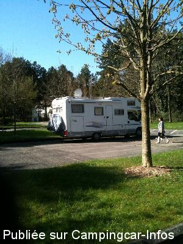
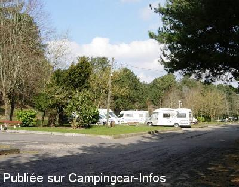
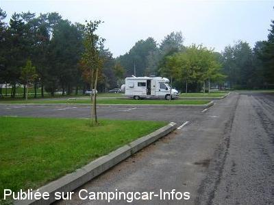

APN = Parking toléré jour/nuit de :
NEUFCHÂTEL HARDELOT
(N° 735)
Accès/adresse :
Place R.L Peeters
62152 NEUFCHÂTEL HARDELOT
62152 NEUFCHÂTEL HARDELOT
Latitude : (Nord) 50.63367° Décimaux ou 50° 38′ 1′′
Longitude : (Est) 1.59845° Décimaux ou 1° 35′ 54′′
Tarif : Gratuit
Services :
Autres informations :
Emplacements stabilisés

Le 17/04/2015 par Bernisa

Le 04/04/2013 par DanielL

Le 26/09/2006 par jean-luc delaroche
de
Bernisa
le 17/04/2015 :
Nous venons de passer une nuit tranquille dans un environnement agréable.Merci à la municipalité.
Nous venons de passer une nuit tranquille dans un environnement agréable.Merci à la municipalité.
de
ferrand
le 16/06/2014 :
Début juin 2014, Bonne étape. y ai passé une nuit
Aire propre au milieu de vastes propriétés
Tranquille, Environ 2 kms du bord de mer
1 heure aller retour.
Début juin 2014, Bonne étape. y ai passé une nuit
Aire propre au milieu de vastes propriétés
Tranquille, Environ 2 kms du bord de mer
1 heure aller retour.
de
Philippe
le 20/08/2013 :
Merci à la commune de nous permettre de passer la nuit ici!
Calme, plat, bel environnement. L'absence de service et le recul de la plage est finalement un avantage: il y a largement de la place!
Merci à la commune de nous permettre de passer la nuit ici!
Calme, plat, bel environnement. L'absence de service et le recul de la plage est finalement un avantage: il y a largement de la place!
de
Claude Lacroix
le 05/05/2013 :
Terrain plat, asphalté, sur une place publique, pas de bruit, gratuit, poubelle à proximité. Visite impromptue et très plaisante d'un jeune écureuil.
Terrain plat, asphalté, sur une place publique, pas de bruit, gratuit, poubelle à proximité. Visite impromptue et très plaisante d'un jeune écureuil.
de
jl Delaroche
le 19/09/2006 :
nous avons passés trois nuits au calme sur ce parking avec déplacements dans la journée . belle plage a deux kilometres .Parking sans services CC
nous avons passés trois nuits au calme sur ce parking avec déplacements dans la journée . belle plage a deux kilometres .Parking sans services CC
de
Laurent
le 11/04/2005 :
Aucun probleme pour passer la nuit.
Quelques voitures bruyantes mais c'etait un samedi soir
Aucun probleme pour passer la nuit.
Quelques voitures bruyantes mais c'etait un samedi soir
de
le 14/06/2002 :
Parking tranquille pour passer la nuit mais assez loin de la plage et du centre ville
Parking tranquille pour passer la nuit mais assez loin de la plage et du centre ville